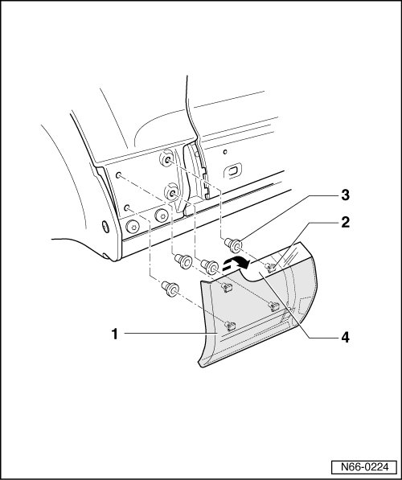

Fender Cover Strip
Moldings and Trim
Fender Cover Strip
Removing
• On vehicles with fender flares, the front fender flares must be removed.

- Pull fender cover strip - 1 - forward - in direction of arrow - off fender.
Installing
• Before installing, check all the fasteners for damage and replace them if necessary.
- Place fender cover strip - 1 - against fender and press on.